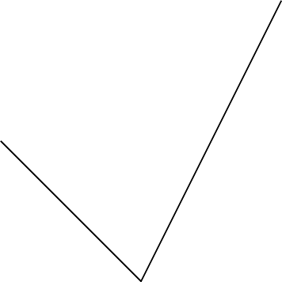
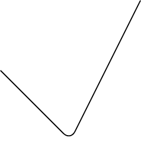

TikZ
How to speed up bookdown generation?
https://stackoverflow.com/questions/56541371/how-to-speed-up-bookdown-generation
TikZ and PGFplots
What’s the relation between packages PGFplots and TikZ?
https://tex.stackexchange.com/questions/285925/whats-the-relation-between-packages-pgfplots-and-tikz
https://www.youtube.com/watch?v=bQugbYq0BVA
https://www.youtube.com/watch?v=ft4Kg9emK1k&list=PLg5nrpKdkk2DWcg3scb75AknF7DJXs8lk&index=18
\begin{tikzpicture}
\def\a{1.5} % amplitude
\def\b{2} % frequency
\draw[->] (-0.2,0)--(4.2,0) node[right, font=\small] {$x$};
\draw[->] (0,-4)--(0,0.5) node[above] {$y$};
\draw[domain=0:4,smooth,variable=\t,blue,thick]
plot ({\a * (\b*\t - sin(deg(\b*\t)))},{-\a * (1 - cos(deg(\b*\t)))});
% \node[above] at (2, 0.5) {Brachistochrone Curve};
\node[above, font=\footnotesize] at (2, 1) {Brachistochrone Curve};
\node[above, font=\footnotesize] at (2, 0) {$\begin{aligned}
& x=r(t-\sin t) \\
& y=r(1-\cos t)
\end{aligned}$};
\end{tikzpicture}Fig. 13.1: Brachistochrone Curve
Fig. 13.2: Brachistochrone Curve
13.1 2D
https://zhuanlan.zhihu.com/p/127155579?utm_psn=1741479950987960320
1


2 
3 

Fig. 13.3: rounded corner pseudo-closed triangle
Fig. 13.4: rounded corner triangle
Fig. 13.5: triangle vs. pseudo-closed triangle
Fig. 13.6: rectangle
Fig. 13.7: square

Fig. 13.8: circle
Fig. 13.9: circle and square
Fig. 13.10: ellipse
Fig. 13.11: circle and ellipse arcs
Fig. 13.12: parabola arc
\begin{tikzpicture}
\draw (-1,1) parabola bend (0,0) (2,4);
\filldraw
(-1,1) circle (.05)
( 0,0) circle (.05)
( 1,1) circle (.05)
( 2,4) circle (.05);
\end{tikzpicture}Fig. 13.13: parabola arc with points
\begin{tikzpicture}
\draw[step=20pt] (0,0) grid (3,2);
\draw[help lines ,step=20pt] (4,0) grid (7,2);
\end{tikzpicture}Fig. 13.14: grid and help lines
Fig. 13.15: grid and help lines
\begin{tikzpicture}[scale=0.25]
\draw[->] (0,0)--(9,0);
\draw[<-] (0,1)--(9,1);
\draw[<->] (0,2)--(9,2);
\draw[>->>] (0,3)--(9,3);
\draw[|<->|] (0,4)--(9,4);
\end{tikzpicture}
Fig. 13.16: arrows
\begin{tikzpicture}
\draw[line width =2pt] (0,6)--(9,6);
\draw[dotted] (0,5)--(9,5);
\draw[densely dotted] (0,4)--(9,4);
\draw[loosely dotted] (0,3)--(9,3);
\draw[dashed] (0,2)--(9,2);
\draw[densely dashed] (0,1)--(9,1);
\draw[loosely dashed] (0,0)--(9,0);
\end{tikzpicture}Fig. 13.17: arrows
\begin{tikzpicture}[dline/.style={color= blue, line width=2pt}]
\draw[dline] (0,0)--(9,0);
\end{tikzpicture}Fig. 13.18: head styling
\begin{tikzpicture}
\draw (0,0) rectangle (2,2);
\draw[shift={( 3, 0)}] (0,0) rectangle (2,2);
\draw[shift={( 0, 3)}] (0,0) rectangle (2,2);
\draw[shift={( 0,-3)}] (0,0) rectangle (2,2);
\draw[shift={(-3, 0)}] (0,0) rectangle (2,2);
\draw[shift={( 3, 3)}] (0,0) rectangle (2,2);
\draw[shift={(-3, 3)}] (0,0) rectangle (2,2);
\draw[shift={( 3,-3)}] (0,0) rectangle (2,2);
\draw[shift={(-3,-3)}] (0,0) rectangle (2,2);
\end{tikzpicture}Fig. 13.19: transform: shift
\begin{tikzpicture}
\draw (0,0) rectangle (2,2);
\draw[xshift= 100pt] (0,0) rectangle (2,2);
\draw[xshift=-100pt] (0,0) rectangle (2,2);
\draw[yshift= 100pt] (0,0) rectangle (2,2);
\draw[yshift=-100pt] (0,0) rectangle (2,2);
\end{tikzpicture}Fig. 13.20: transform: shift x, y
\begin{tikzpicture}
\draw (0,0) rectangle (2,2);
\draw[xshift= 100pt, xscale=1.5] (0,0) rectangle (2,2);
\draw[yshift= 100pt, xscale=0.5] (0,0) rectangle (2,2);
\draw[xshift=-100pt, yscale=1.5] (0,0) rectangle (2,2);
\draw[yshift=-100pt, yscale=0.5] (0,0) rectangle (2,2);
\end{tikzpicture}Fig. 13.21: transform: scale x, y
\begin{tikzpicture}
\draw (0,0) rectangle (2,2);
\draw[xshift= 100pt, xscale=1.5] (0,0) rectangle (2,2);
\draw[yshift= 100pt, yscale=1.5] (0,0) rectangle (2,2);
\draw[xshift=-100pt, xscale=0.5] (0,0) rectangle (2,2);
\draw[yshift=-100pt, yscale=0.5] (0,0) rectangle (2,2);
\end{tikzpicture}Fig. 13.22: transform: scale
\begin{tikzpicture}
\draw (0,0) rectangle (2,2);
\draw[xshift=125pt,rotate=45] (0,0) rectangle (2,2);
\draw[xshift=175pt,rotate around={45:(2 ,2)}] (0,0) rectangle (2,2);
\end{tikzpicture}Fig. 13.23: transform: rotate
\begin{tikzpicture}
\draw (0,0) rectangle (2,2);
\draw[xshift=70pt,xslant=1] (0,0) rectangle (2,2);
\draw[yshift=70pt,yslant=1] (0,0) rectangle (2,2);
\end{tikzpicture}Fig. 13.24: transform: slant
\tikzset{
box/.style={
draw=blue,
rectangle,
rounded corners=5pt,
minimum width=50pt,
minimum height=20pt,
inner sep=5pt
}
}
\begin{tikzpicture}
\node[box] (1) at (0,0) {1};
\node[box] (2) at (4,0) {2};
\node[box] (3) at (8,0) {3};
\draw[->] (1)--(2);
\draw[->] (2)--(3);
\node at (2,1) {a};
\node at (6,1) {b};
\end{tikzpicture}Fig. 13.25: flowchart
\tikzset{
box/.style={
draw=blue,
fill=blue!20,
rectangle,
rounded corners=5pt,
minimum height=20pt,
inner sep=5pt
}
}
\begin{tikzpicture}
\node[box] {1}
child {node[box] {2}}
child {node[box] {3}
child {node[box] {4}}
child {node[box] {5}}
child {node[box] {6}}
};
\end{tikzpicture}Fig. 13.26: tree
\begin{tikzpicture}
\draw[->] (-0.2,0)--(6,0) node[right] {$x$};
\draw[->] (0,-0.2)--(0,6) node[above] {$f(x)$};
\draw[domain=0:4] plot (\x ,{0.1* exp(\x)}) node[right] {$f(x)=\frac{1}{10}e^x$};
\end{tikzpicture}Fig. 13.27: tree
https://stackoverflow.com/questions/64897575/tikz-libraries-in-bookdown
It turns out that you can simply put the \usetikzlibrary{...} command directly before the \begin{tikzpicture} and everything works fine :)
https://tex.stackexchange.com/questions/171711/how-to-include-latex-package-in-r-markdown
13.2 3D
https://zhuanlan.zhihu.com/p/431732330?utm_psn=1741857547550638080
https://github.com/RRWWW/Stereometry
\begin{tikzpicture}
\coordinate (A) at ( 1, 1, 1);
\coordinate (B) at ( 1, 1,-1);
\coordinate (C) at ( 1,-1,-1);
\coordinate (D) at ( 1,-1, 1);
\coordinate (E) at (-1,-1, 1);
\coordinate (F) at (-1,-1,-1);
\coordinate (G) at (-1, 1,-1);
\coordinate (H) at (-1, 1, 1);
\draw (A) node[right=1pt] {$A$}--
(B) node[right=1pt] {$B$}--
(C) node[right=1pt] {$C$}--
(D) node[right=1pt] {$D$}--
(E) node[left= 1pt] {$E$}--
(F) node[right=1pt] {$F$}--
(G) node[right=1pt] {$G$}--
(H) node[left= 1pt] {$H$}--
(A) node[right=1pt] {$A$};
\end{tikzpicture}Fig. 13.28: cube
https://tex.stackexchange.com/questions/388621/optimizing-perspective-tikz-graphic
Fig. 13.29: cube rotate
Fig. 13.30: cube rotate
https://github.com/XiangyunHuang/bookdown-broken/blob/master/index.Rmd
\smartdiagramset{planet color=gray!40!white, uniform color list=gray!40!white for 10 items}
\smartdiagram[bubble diagram]{Basic skills,
Edit~/\\ (RStudio), Organize~/\\ (bookdown), Cooperate~/\\ (Git), Typeset~/\\ (LaTeX/Pandoc), Compile~/\\ (GitHub Action)}Fig. 13.31: modern statistics plot skills
\usetikzlibrary{patterns}
\usetikzlibrary{3d,calc}
\tdplotsetmaincoords{45}{45}
\begin{tikzpicture}[tdplot_main_coords]
\coordinate (A) at ( 1, 1, 1);
\coordinate (B) at ( 1, 1,-1);
\coordinate (C) at ( 1,-1,-1);
\coordinate (D) at ( 1,-1, 1);
\coordinate (E) at (-1,-1, 1);
\coordinate (F) at (-1,-1,-1);
\coordinate (G) at (-1, 1,-1);
\coordinate (H) at (-1, 1, 1);
\draw (A) node[right=1pt] {$A$}--
(B) node[right=1pt] {$B$}--
(C) node[right=1pt] {$C$}--
(D) node[right=1pt] {$D$}--
(E) node[left= 1pt] {$E$}--
(F) node[right=1pt] {$F$}--
(G) node[right=1pt] {$G$}--
(H) node[left= 1pt] {$H$}--
(A) node[right=1pt] {$A$};
\end{tikzpicture}Fig. 13.32: cube rotate